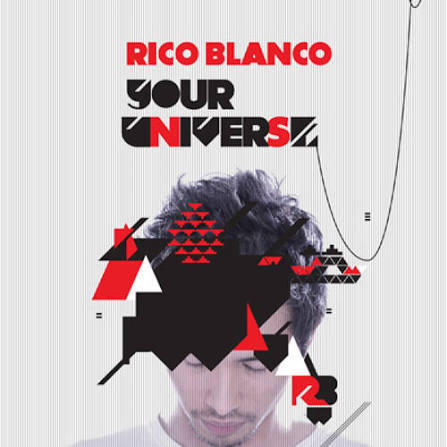

Made By Rico Blanco

[Verse 1]
Tell me something
When the rain falls on my face
How do you quickly replace itWith a golden summer smile?
Tell me something
When I'm feelin' tired and afraid
How do you know just what to say
To make everything alright?
[Chorus]
I don't think that you even realize
The joy you make me feel when I'm inside your universe
You hold me like I'm the one who's precious
I hate to break it to you, but it's just the other way around
You can thank your stars all you want
But I'll always be the lucky one
Tell me something When I'm 'bout to lose controlHow do you patiently hold my hand
And gently calm me down?
[Verse 2]
Tell me something
When you sing and when you laugh
Why do I always photograph
My heart flying way above the clouds?
[Chorus]
I don't think that you even realize
The joy you make me feel when I'm inside your universe
You hold me like I'm the one who's precious
I hate to break it to you, but it's just the other way around
You can thank your stars all you want
But I'll always be the lucky one
[Bridge]
Whoa, ooh
Whoa, ooh
Whoa, ooh, ooh
[Chorus]
I don't think that you even realize
The joy you make me feel when I'm inside your universe
You hold me like I'm the one who's precious
I hate to break it to you, but it's just the other way around
You can thank your stars all you want
But I'll always be the lucky one
[Outro]
You can thank your stars all you want
But I'll always be the lucky one
I'll always be the lucky one
I'll always be the lucky one